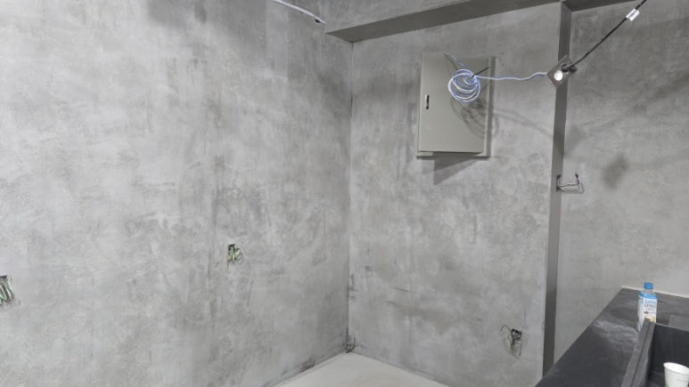
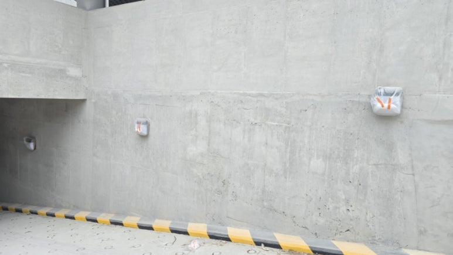
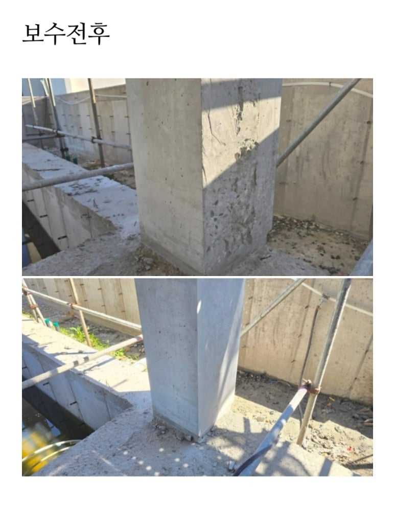
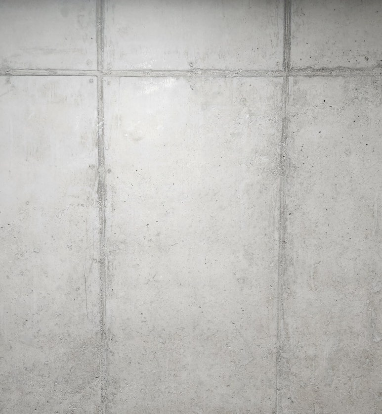
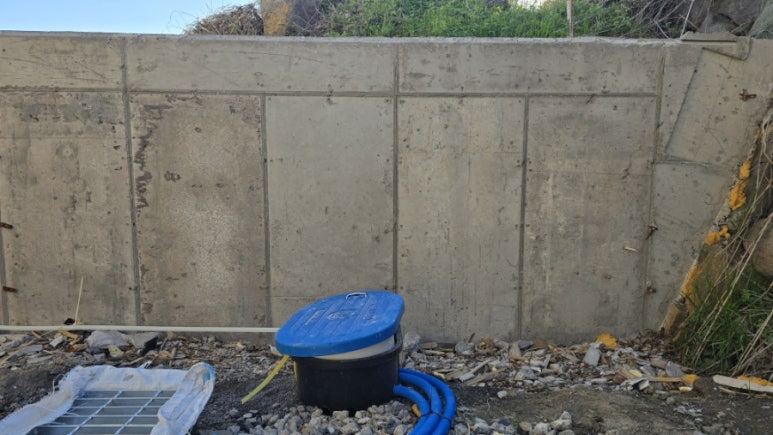
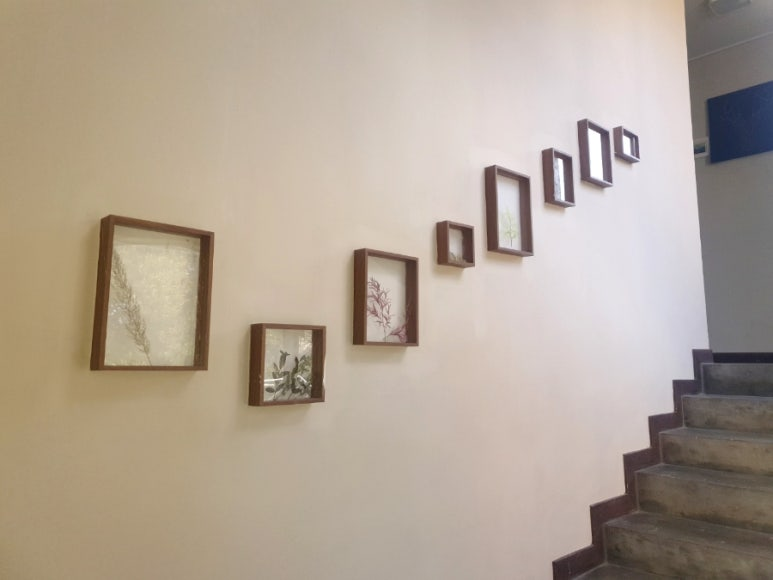
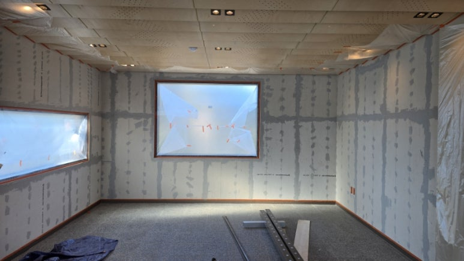
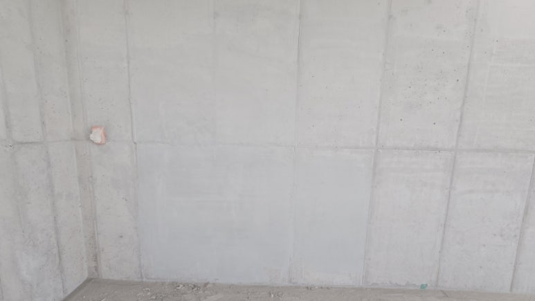
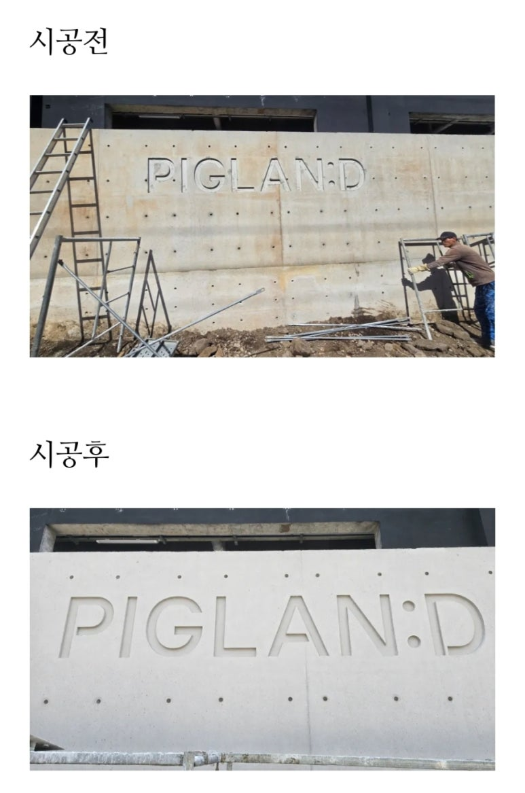
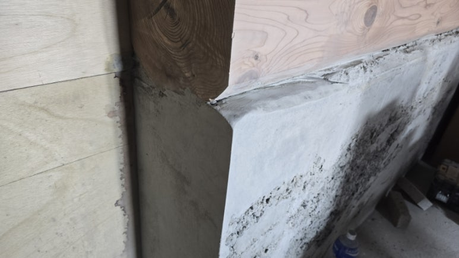

BEFORE / AFTER강남 의류매장 석고보드 위 콘채 그레이 패턴 노출콘크리트 시공강남 의류매장 내부 석고보드 벽체에 콘채 그레이 패턴을 적용해 빈티지한 노출콘크리트 감성을 연출한 시공 사례.
BEFORE & AFTER
시공사례
보정하지 않은 시공 전 · 시공 중 · 시공 후 사진과 그때 쓴 공법을 그대로 공개합니다.
보수의 완성도는 사진 한 장이 아니라 시공 전과의 차이에서 드러납니다.
아래 사례는 모두 노출콘크리트 표면 결함 복원과 특수방수 현장의 기록입니다. 각 사례에는 결함의 상태, 그때 선택한 배합과 공법, 그리고 시공 단계별 사진이 함께 들어 있습니다.
총 0건 · 시공 전후 비교가 있는 사례 먼저

BEFORE / AFTER기둥 골재 노출 단면보수 및 콘채패턴 마감 (2개 기둥 사례)골재 절단면이 노출된 기둥 2곳의 단면보수와 콘채패턴 마감 과정. 단면보수 단계부터 표면 연출, 실무 판단 포인트까지 기록.
BEFORE / AFTER노출콘크리트 리페어 콘채 희석비율 비교 사례노출콘크리트 색조작업 시 콘채 희석비율(1:3~1:5)에 따른 표면 색감·질감 차이를 비교 설명하는 기술 해설 게시물.
BEFORE / AFTER노출콘크리트 옹벽 얼룩·거친면 콘채뿜칠 개선 시공얼룩과 거친 표면으로 미관이 저하된 노출콘크리트 옹벽을 콘채뿜칠 공법으로 균일한 연그레이 톤으로 개선한 사례.
BEFORE / AFTER사무실 복도 수성페인트 위 콘채 노출콘크리트 마감 시공기존 수성페인트 벽체 위에 콘채를 롤러로 2회 시공하여 노출콘크리트 느낌으로 전환한 사무실 복도 시공사례. 배합비와 무취 시공 특성을 기록.
BEFORE / AFTER석고보드 마감 상가 콘크리트 에이징 표현 (콘채 그레이톤 패턴 시공)구조체를 노출하지 않고 석고보드 위에서 콘크리트의 깊이감과 시간의 흔적을 색감·레이어링으로 표현한 상가 시공 사례. 올퍼티-패턴레이어링-채도감소 3단계 공정을 상세 기록. BEFORE / AFTER송파 오픈예정 식당 인더스트리얼 콘채 빈티지 벽체 시공송파 지역 식당 오픈 준비 현장에서 이질재료 벽체를 올퍼티·다단계 콘채뿜칠로 인더스트리얼 빈티지 벽체로 완성한 사례. 자재·공구 목록과 9단계 공정을 상세 기록.
BEFORE / AFTER송파 오픈예정 식당 인더스트리얼 콘채 빈티지 벽체 시공송파 지역 식당 오픈 준비 현장에서 이질재료 벽체를 올퍼티·다단계 콘채뿜칠로 인더스트리얼 빈티지 벽체로 완성한 사례. 자재·공구 목록과 9단계 공정을 상세 기록.
BEFORE / AFTER유로폼 노출콘크리트 줄눈복원 시공사례벽면처리·땜빵 과정에서 사라진 유로폼 노출콘크리트 줄눈을 콘채와 수공구로 복원한 시공사례. 배합, 프라이머, 줄눈 폭, 샌딩 단계까지 전 공정 기록.
BEFORE / AFTER음각 로고 노출콘크리트 벽체 파손·오염 면보수 및 색보정파손·오염·색편차가 있던 음각 로고 노출콘크리트 벽체를 입체감과 빛 방향을 고려해 면보수·색보정한 사례.
BEFORE / AFTER인테리어 현장 노출콘크리트면 복원 사례 (미장느낌 없는 형상복원)노출콘크리트면을 유지해야 하지만 현장 여건상 이질감이 발생한 벽체를, 콘채를 이용한 박막미장·샌딩·패턴 작업으로 미장느낌 없이 자연스럽게 복원한 사례. BEFORE / AFTER제주 공원 노출콘크리트 외벽 노후 복원 시공사례제주도 소재 공원의 노후·오염된 노출콘크리트 외벽을 콘채로 복원한 시공사례. 배합비, 프라이머 병행, 에어 컴프레서 시공 및 시공전후 비교를 기록.
BEFORE / AFTER제주 공원 노출콘크리트 외벽 노후 복원 시공사례제주도 소재 공원의 노후·오염된 노출콘크리트 외벽을 콘채로 복원한 시공사례. 배합비, 프라이머 병행, 에어 컴프레서 시공 및 시공전후 비교를 기록.TECHNICAL NOTES
공법이 궁금하시다면
사례에 쓰인 공정별 기준과 판단 근거는 기술자료에 따로 정리해 두었습니다.
CONTACT
비슷한 현장이 있으신가요?
현장사진을 보내주시면 보수 방향을 검토해 회신드립니다.